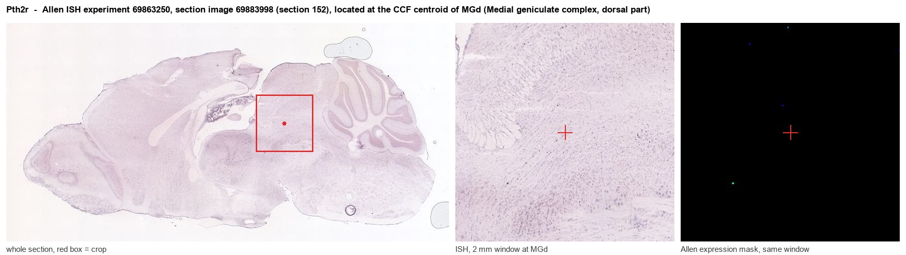
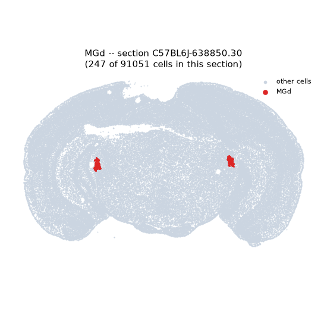
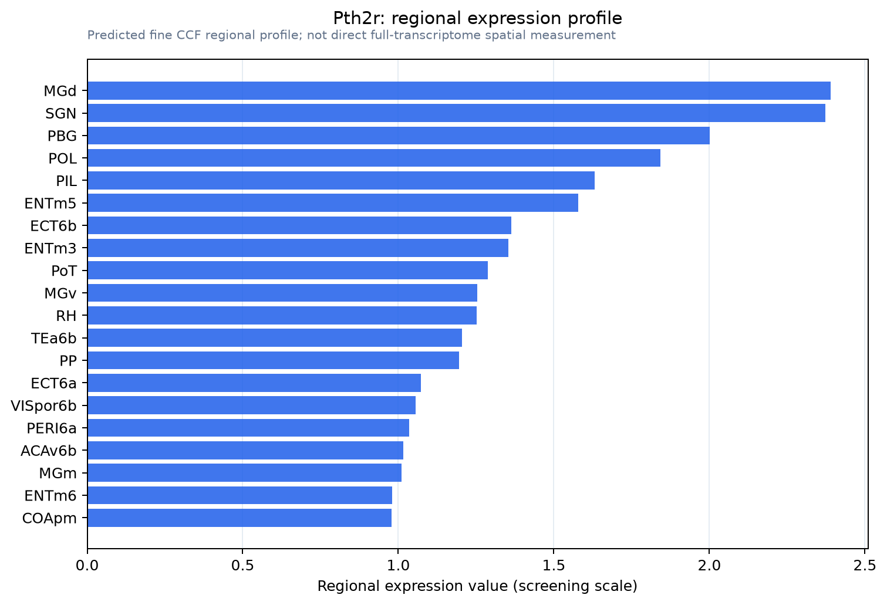

Pth2r
Parathyroid hormone 2 receptor (PTH2 receptor)
Spatial tier: REGION_BIASED · Class: GPCR · Top region: MGd (Medial geniculate complex, dorsal part) · Positive regions: 35/554
43.9Discovery Score
40.3Targetability Score
CEvidence grade C
What this means: Pth2r: fine CCF profile is region-biased toward MGd (top regions: MGd, SGN, PBG, POL, PIL); this is a discovery lead, not direct proof.
Function in MGd: evidence, prediction, innovation
- Gene function
- Pth2r encodes the parathyroid hormone 2 receptor, a class B secretin-family GPCR coupling to Gs and raising cAMP. Its endogenous brain ligand is tuberoinfundibular peptide of 39 residues (TIP39), made by only two neuron groups: the subparafascicular area and the medial paralemniscal nucleus. The pair modulates limbic, neuroendocrine, nociceptive and auditory circuits; knockouts alter fear and stress hormones.
- Region function
- The dorsal medial geniculate is non-lemniscal auditory thalamus: broadly tuned, multisensory and plastic, projecting to belt auditory cortex and amygdala, the pathway used for auditory fear conditioning.
- Published in this region
- direct Faber 2007 mapped PTH2R mRNA, lacZ reporter and immunoreactive fibres in mouse, listing the medial geniculate body among regions of abundant PTH2R with matching TIP39 innervation. Dobolyi 2003 showed by lesion that these fibres originate in the medial paralemniscal nucleus, not the subparafascicular group, and Palkovits 2009 found 105 dB noise drives c-fos in ~80% of medial paralemniscal TIP39 neurons. Bago 2009 confirmed this in macaque. Allen ISH gives MGd 0.61 versus 0.28 for grey matter.
- Predicted function
- Prediction: PTH2R in MGd is the target of a loud-sound-activated peptidergic projection from the medial paralemniscal nucleus, acting through Gs-cAMP to gain-modulate non-lemniscal relay during acoustic stress. Deleting Pth2r in MGd, or chemogenetically silencing medial paralemniscal TIP39 neurons, should spare thresholds but reduce noise-induced enhancement of auditory-cued fear learning.
- Innovation
- ★★☆☆☆ 2/5 TIP39-PTH2R anatomy in the medial geniculate is well described, but its auditory function has never been tested.
- Tools
- PTH2R-lacZ knock-in reporter and PTH2R knockout mice (Faber 2007; Dimitrov 2010); TIP39 knockout mice (Fegley 2008); synthetic TIP39 peptide; PTH2R and TIP39 antibodies.
- References
Direct evidence located at the region

Allen ISH experiment 69863250, section image 69883998 (section 152): the section that contains the CCF centroid of Medial geniculate complex, dorsal part according to the Allen image-to-atlas alignment (reference_to_image), with a 2 mm window around that point. Left: whole section, red box = window. Middle: ISH signal. Right: Allen's expression-mask view of the same window. open this image in the Allen viewer
Look it up yourself: Allen Mouse Brain ISH for Pth2rAllen reference atlas: MGd (structure 1072)ABC Atlas MERFISH viewer(in the ABC Atlas choose dataset MERFISH-C57BL6J-638850-CCF, colour cells by gene "Pth2r" or by parcellation_substructure "MGd")All genes confined to MGd + 3-D brain
Direct spatial evidence
MERFISH REGION LOCATOR

Regional expression figure

Predicted WMB × fine-CCF profile; not direct full-transcriptome spatial measurement.
Spatial profile
Evidence and specificity
- Evidence status
- PREDICTED_FINE
- Direct sources
- None; predicted localization only
- Exclusive threshold
- 12 positive regions out of 554
- Spatial specificity
- 0.299
- Top-region fraction
- 0.046
- Filter status
- PASS
Interpretation limits
- Cell-type-to-region projection is imputed expression, not direct spatial measurement.
- Adult reference atlases do not establish stability across age, sex, strain, state, or disease.
- Transcript abundance does not guarantee protein abundance or genetic-tool performance.